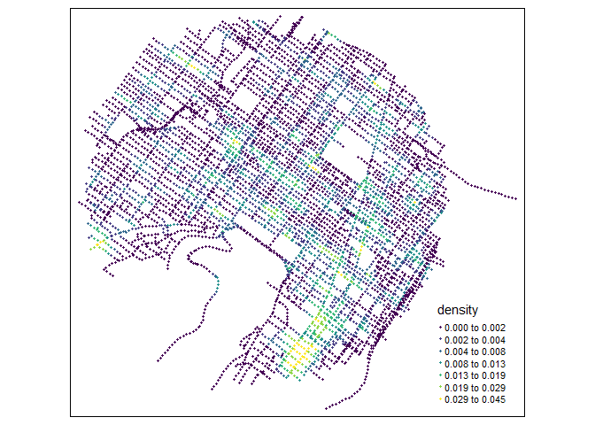
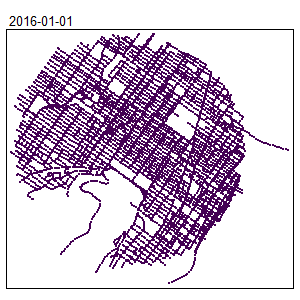
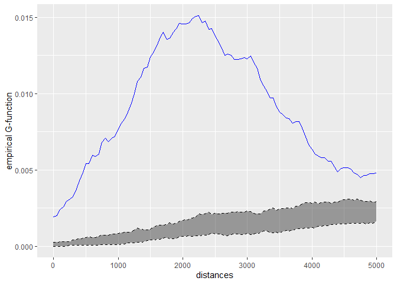
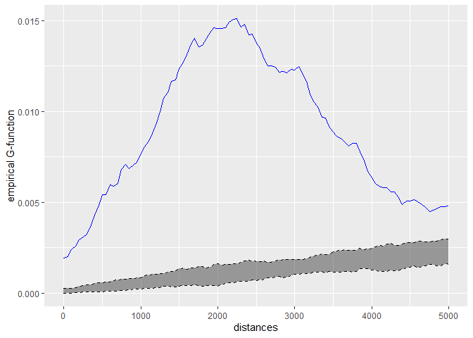

Breaking news
Moving to sf
Considering that rgeos and maptools will be deprecated soon, we are moving to sf! This requires some adjustment in the code and the documentation. The development version and the releases on CRAN are now using sf. Please, report any bug or error in the documentation.
To install the previous version using sp, rgeos and maptools, you can run the following command:
devtools::install_github("JeremyGelb/spNetwork", ref = "a3bc982")Note that all the new developments will use sf and you should switch as soon as possible.
Removing gpkgs
Because of a new CRAN policy, it is not possible anymore to read data in gpkg if they are stored in the user library. On Debian systems, this library is now mounted as read-only for checking. All the datasets provided by spNetwork are now stored as .rda file, and can be loaded with the function data.
What is this package ?
This package can be used to perform several types of analysis on geographical networks. This type of network have spatial coordinates associated with their nodes. They can be directed or undirected. In the actual development version the implemented methods are:
- Network Kernel Density Estimate, a method estimating density of a point pattern constrained on a network (see the vignettes Network Kernel Density Estimate and Details about NKDE).
- Temporal Network Kernel Density Estimate, a temporal extension of the previous methods Temporal Network Kernel Density Estimate.
- Spatial weight matrices based on network distances, which can be used in a great number of traditional methods in spatial analysis (see the vignette Spatial Weight Matrices).
- Network k Functions, used to investigate the spatial distribution of a set of points on a network at several scales (see the vignette Network k Functions).
- K nearest neighbours, to calculate for each point on a network its K nearest neighbour (see the function
network_knn). - Graph analysis, using the functions of the package igraph (see the vignette Building graphs)
- Isochrones, to delineate accessible area around points localized on a network (see the vignette Calculating isochrones)
Calculation on network can be long, efforts were made to reduce computation time by implementing several core functions with Rcpp and RcppArmadillo and by using multiprocessing when possible.
Installing
you can install the CRAN version of this package with the following code in R.
install.packages("spNetwork")To use all the new features before they are available in the CRAN version, you can download the development version.
devtools::install_github("JeremyGelb/spNetwork")The packages uses mainly the following packages in its internal structure :
- igraph
- sf
- future
- future.apply
- data.table
- Rcpp
- RcppArmadillo
- BH
Some examples
We provide here some short examples of several features. Please, check the vignettes for more details.
- realizing a kernel network density estimate
library(spNetwork)
library(tmap)
library(sf)
# loading the dataset
data(mtl_network)
data(bike_accidents)
# generating sampling points at the middle of lixels
samples <- lines_points_along(mtl_network, 50)
# calculating densities
densities <- nkde(lines = mtl_network,
events = bike_accidents,
w = rep(1,nrow(bike_accidents)),
samples = samples,
kernel_name = "quartic",
bw = 300, div= "bw",
method = "discontinuous",
digits = 2, tol = 0.1,
grid_shape = c(1,1),
max_depth = 8,
agg = 5, sparse = TRUE,
verbose = FALSE)
densities <- densities*1000
samples$density <- densities
tm_shape(samples) +
tm_dots(col = "density", size = 0.05, palette = "viridis",
n = 7, style = "kmeans")
An extension for spatio-temporal dataset is also available Temporal Network Kernel Density Estimate

- Building a spatial matrix based on network distance
library(spdep)
# creating a spatial weight matrix for the accidents
listw <- network_listw(bike_accidents,
mtl_network,
mindist = 10,
maxdistance = 400,
dist_func = "squared inverse",
line_weight = 'length',
matrice_type = 'W',
grid_shape = c(1,1),
verbose=FALSE)
# using the matrix to find isolated accidents (more than 500m)
no_link <- sapply(listw$neighbours, function(n){
if(n == 0){
return(TRUE)
}else{
return(FALSE)
}
})
bike_accidents$isolated <- as.factor(ifelse(no_link,
"isolated","not isolated"))
tm_shape(mtl_network) +
tm_lines(col = "black") +
tm_shape(bike_accidents) +
tm_dots(col = "isolated", size = 0.1,
palette = c("isolated" = "red","not isolated" = "blue"))
Note that you can use this in every spatial analysis you would like to perform. With the converter function of spdep (like listw2mat), you can convert the listw object into regular matrix if needed
- Calculating k function
# loading the data
data(main_network_mtl)
data(mtl_theatres)
# calculating the k function
kfun_theatre <- kfunctions(main_network_mtl, mtl_theatres,
start = 0, end = 5000, step = 50,
width = 1000, nsim = 50, resolution = 50,
verbose = FALSE, conf_int = 0.05)
kfun_theatre$plotg
Work in progress
New methods will be probably added in the future, but we will focus on performance for the next release. Do no hesitate to open an issue here if you have suggestion or if you encounter a bug.
Features that will be added to the package in the future:
- temporal NKDE, a two dimensional kernel density estimation in network space and time
- rework for using
sfobjects rather thansp(rgeosandmaptoolswill be deprecated in 2023). This work is undergoing, please report any bug or error in the new documentation.
Reporting a bug
If you encounter a bug when using spNetwork, please open an issue here. To ensure that the problem is quickly identified, the issue should follow the following guidelines:
- Provide an informative title and do not copy-paste the error message as the title.
- Provide the ALL code which lead to the bug.
- Indicate the version of R and spNetwork.
- If possible, provide a sample of data and a reproductible example.
Contribute
To contribute to spNetwork, please follow these guidelines.
Please note that the spNetwork project is released with a Contributor Code of Conduct. By contributing to this project, you agree to abide by its terms.
Citation
An article presenting spNetwork and NKDE has been accepted in the RJournal!
Gelb Jérémy (2021). spNetwork, a package for network kernel density estimation. The R Journal. https://journal.r-project.org/archive/2021/RJ-2021-102/index.html.
You can also cite the package for other methods:
Gelb Jérémy (2021). spNetwork: Spatial Analysis on Network. https://jeremygelb.github.io/spNetwork/.
License
spNetwork is licensed under GPL2 License.